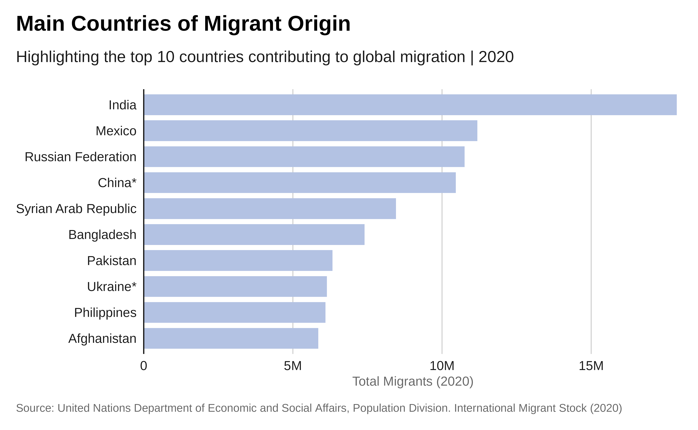
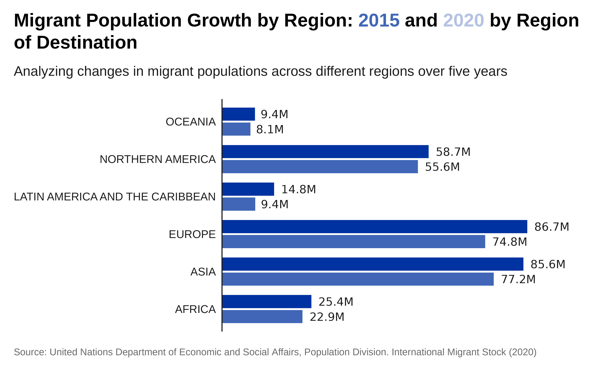
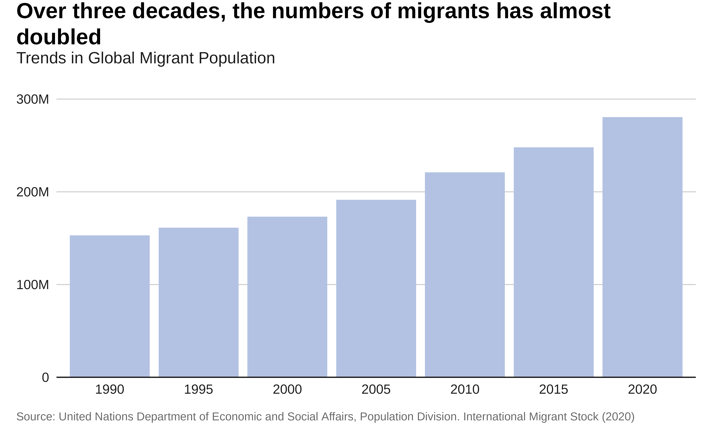
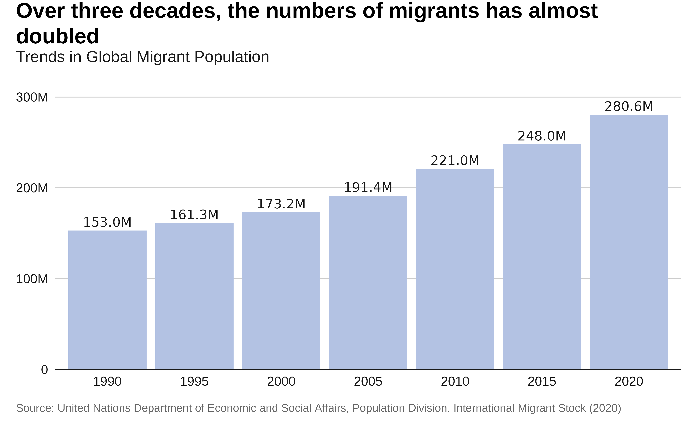
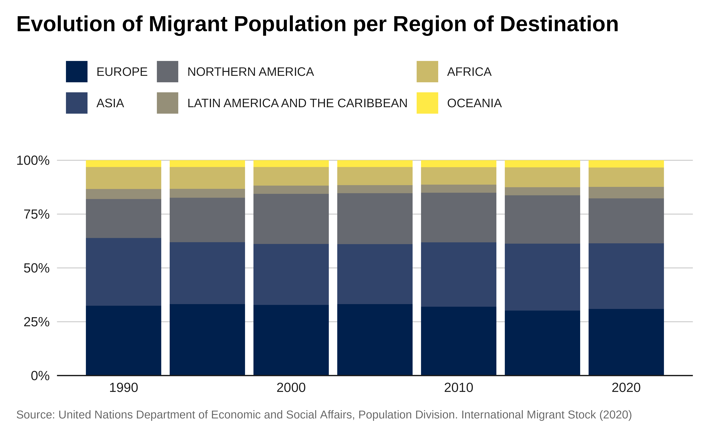
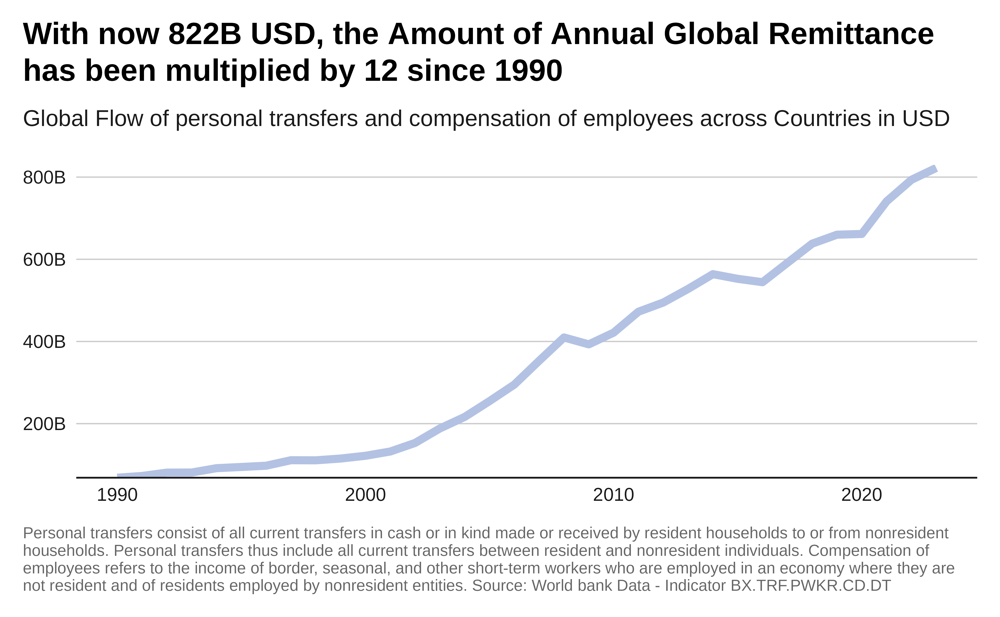
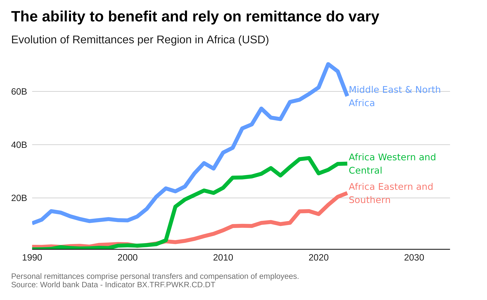
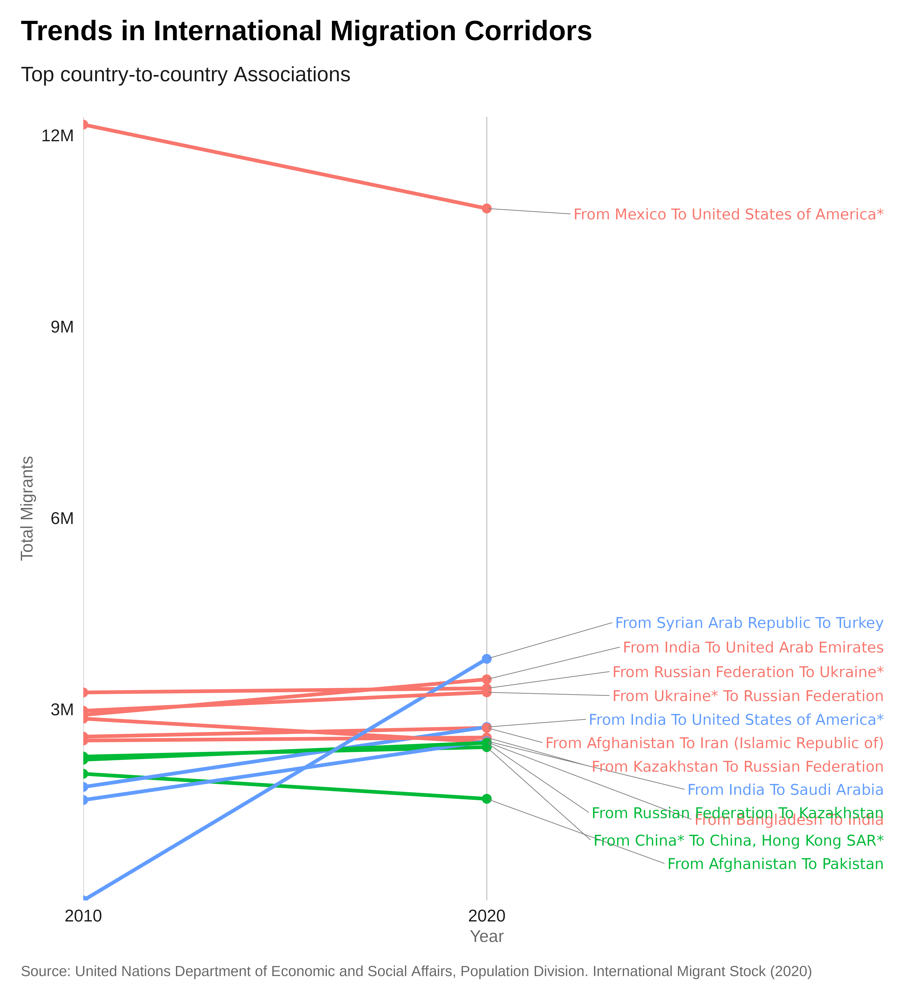

Creating IOM-Branded Data Visualizations with {iomthemes}
Source:vignettes/iomthemes.Rmd
iomthemes.RmdData visualization is a powerful tool for conveying insights from complex datasets and telling compelling stories. The International Organisation for Migration (IOM) supports governments in promoting safe and humane migration. Using data to tell evidence-based stories about migration is critical for IOM’s mission.
The iomthemes package, built on the versatile ggplot2 library, offers a practical solution for creating professional, publication-level IOM-branded data stories
Introduction
Effective chart are first those that support a message. From the same data set a multiplicity of chart can be produced. The best chart is the one that present in the most powerful way the message that you want to pass-on through the story the data allow you to tell.
Minimalistic Design
“Graphical elegance is often found in simplicity of design and complexity of data.”Edward Tufte
The main rule to achieving can be summarised as: “Do keep the chart as simple as possible”. A common mistake we all make with charts is overdressing them with unnecessary elements and details. The usual suspects are excess color, graphical clutter and abuse of special effects. Details like these won’t impress anyone but de-cluttering your charts will. To do so:
Outline the message: Always use the main conclusion you want to draw within the title of the chart, use the subtitle to present the data that you have used in the chart. annotation in the chart can also help explaining why the chart is an evidence of the message you present. The message resides in the shape of the data. Chart titles should be clear and accurate, includes time increment and units.
Focus on legibility: Graph should be designed to highlight trends, patterns and make exceptions more visible. They can also be designed to reveal relationships among multiple values. For instance, for bar graph presenting categories, do use a horizontal bar graph and arrange data from greatest to least in descending order.
Use color to communicate information and not for decoration. Too many colors can confuse and disorient. When designing a graph, color can be both your friend and your enemy. Depending on how we use it, it can either gracefully highlight data and show changes, or create visual overload and confuse the audience. Don’t use more than six colors or six different categories within the same chart: human brain cannot process more than this.
Reshape first your data: A good chart establish a balance between content & message: Too many content -> not legible; Not enough content -> not precise. Therefore, the content (i.e. the data) shall be adjusted content to message. For instance, extra decimal places look impressive and imply accuracy, but they’re often pointless. So, take a step back and round numbers off before plotting. Overstating the numerical precision of your data by showing too many decimal places can make your chart seem accurate, but this specificity is just misleading. Even when you don’t exaggerate the precision of your data, and your numbers are genuinely accurate, overloading your audience with such detail is often useless
Telling Story with Data
Data stories needs to align to a narrative frame, that often falls in one the class below :
Shed light on a previously unexplored topic, ,
Introduce an interesting angle,
Provide useful suggestions to solve a problem,
Disprove an hypothesis / debunk a widely held belief assumption.
When designing a chart using ggplot2 in R, beside crafting an insightful message, though your title and subtitle, the following data storytelling techniques can be practically applied:
Narrative Arc: Structure your chart to follow a clear beginning, middle, and end. Start by setting up the context with initial data points, show the progression or trend, and conclude with the key insights. In ggplot2, you can use
geom_line()for trends andannotate()to add narrative elements.Highlighting Key Insights: Use colors and annotations to draw attention to important data points. In ggplot2, you can use
geom_point()with specific colors andgeom_text()for annotations.Comparative Analysis: Design charts that compare different datasets or time periods. Use
facet_wrap()orfacet_grid()to create side-by-side comparisons.Contextualization: Provide context by adding reference lines or shaded areas. Use
geom_hline(),geom_vline(), orgeom_rect()in ggplot2.Simplification: Focus on simplicity by removing unnecessary elements. Use
theme_iom(void =TRUE)to simplify the chart’s appearance.
Divisible Content
When designing a chart, you can apply a “divisible content strategy”. The idea is to create micro-content: aka a detailed, re-usable and data-rich chart that extract key insights highlight data points within a single visual. The chart should be designed to support a single-messaging focus that should be clearly stated within your chart title and potentially reinforced through annotations within your chart.
Such focused visuals can then be easily copy-pasted or embedded in different media: reports, presentation, talking points, websites or social media… This approach maximizes the value of your content by allowing you to reach different audiences with tailored messages while maintaining a consistent brand voice.
This gives “More Content With Less Work”: not only, it enhances your content’s reach but it also ensures that your audience can engage with the information in various formats and platforms.
Use AI!
Note that when designing a chart, you can always speed up your work
using an AI Language Model like Copilot. What you need is to
write your prompt, asking for an R ‘{tidyverse}’ script, defining the
type of chart you want and with a precise description of your dataset -
including the name of your dataframe and the name of its variable. Once
you have the initial script then just apply the theme_iom
function.
Initial Setup
You will need to first install R and R sudio. Alternatively you may also use Visual Studio.
Before we start creating IOM branded charts, make sure you have the necessary packages installed for this tutorial. Paste the following within your Rstudio Console:
# Install CRAN packages
packages <- c(
# A collection of R packages designed for data science,
#including ggplot2, dplyr, tidyr, readr, purrr, tibble, stringr, and forcats.
"tidyverse",
# Provides tools for scaling data and formatting axes and legends in ggplot2.
"scales",
# Extends ggplot2 to provide better label placement, avoiding overlaps.
"ggrepel",
# Converts country names and codes between different formats.
"countrycode",
# Provides access to World Bank data & World Development Indicators.
"WDI",
# Converts statistical analysis objects from R into tidy data frames.
"broom",
# A graphics device for R that produces high-quality, anti-aliased output.
"ragg",
# A package manager for R that makes it easier to install and manage packages.
"pak",
# Provides support for a standardized way to encode spatial vector data.
"sf",
# Provides access to Natural Earth map data.
"rnaturalearth",
# Contains the actual data for the rnaturalearth package.
"rnaturalearthdata"
)
install.packages(setdiff(packages, rownames(installed.packages())))
# Install iomthemes with pak
pak::pkg_install("iom/iomthemes")Load the packages into your R environment:
# Load required packages
library(iomthemes)
#> Error in get(paste0(generic, ".", class), envir = get_method_env()) :
#> object 'type_sum.accel' not found
library(tidyverse)
library(countrycode)
library(WDI)
library(ggrepel)
library(sf)
library(rnaturalearth)
library(rnaturalearthdata)Some packages installed above will be loaded using the
:: notation to make the code and intentions clearer.
Demo Data
In this tutorial, to make it relevant to IOM context, we’ll use the Statistics on Global Migration provided by the Population Division of United Nations Department of Economic and Social Affairs (UNDESA).
The estimates of the number (or “stock”) of international migrants disaggregated by age, sex and country or area of origin are based on national statistics, in most cases obtained from population censuses. Additionally, population registers and nationally representative surveys provided information on the number and composition of international migrants.
The dataset presents estimates of international migrant by age, sex and origin. Estimates are presented for 1990, 1995, 2000, 2005, 2010, 2015 and 2020 and are available for 232 countries and areas of the world. The estimates are based on official statistics on the foreign-born or the foreign population.
Those dataset are conveniently directly included in the package. In the script below, you can also learn about some basic data preparation steps when loading data from Excel.
# turn-off scientific notation like 1e+48
options(scipen = 999)
## The files are within the 'inst' - installation folder of the package
file.sex.destination.origin <- system.file(
"undesa_pd_2020_ims_stock_by_sex_destination_and_origin.xlsx",
package = "iomthemes")
data.sex.destination.origin <- readxl::read_excel(file.sex.destination.origin,
col_types = c("numeric", "text", "text","numeric", "text",
"text", "numeric",
"numeric","numeric", "numeric", "numeric","numeric","numeric",
"numeric", "numeric", "numeric", "numeric", "numeric", "numeric",
"numeric","numeric", "numeric", "numeric", "numeric", "numeric",
"numeric","numeric", "numeric" ),
sheet = "Table 1", skip = 9) |>
## Getting clean variable names
janitor::clean_names() |>
## Renaming correctly the variables - let's get the variable names we have
# dput(names(data.sex.destination.origin))
## List of variable we can keep
# "index",
# "region_development_group_country_or_area_of_destination",
# "notes_of_destination",
# "location_code_of_destination",
# "type_of_data_of_destination",
# "region_development_group_country_or_area_of_origin",
# "location_code_of_origin"
dplyr::rename(
## Both Sex
"total.1990"="x1990_8", "total.1995"="x1995_9",
"total.2000"= "x2000_10", "total.2005"="x2005_11",
"total.2010"="x2010_12", "total.2015"="x2015_13",
"total.2020"="x2020_14",
## Male
"male.1990"="x1990_15", "male.1995"="x1995_16",
"male.2000"="x2000_17", "male.2005"="x2005_18",
"male.2010"="x2010_19", "male.2015"="x2015_20",
"male.2020"="x2020_21",
## Male
"female.1990"="x1990_22", "female.1995"="x1995_23",
"female.2000"="x2000_24", "female.2005"="x2005_25",
"female.2010"="x2010_26", "female.2015"="x2015_27",
"female.2020"="x2020_28")|>
# Add ISO2 country code to identify the country level records and
# have a key to join for mapping purpose
dplyr::mutate( origin.iso2 = countrycode::countrycode(
location_code_of_origin,
origin = "un",
destination = "iso2c"),
destination.iso2 = countrycode::countrycode(
location_code_of_destination,
origin = "un",
destination = "iso2c"))
## The second key file from UNDESA
file.age.sex.destination <- system.file("undesa_pd_2020_ims_stock_by_age_sex_and_destination.xlsx",
package = "iomthemes")
## Age & Sex breakdown for migrants
data.age.sex.destination.mig <- readxl::read_excel(file.age.sex.destination,
sheet = "Table 1", skip = 9)|>
## Getting clean variable names
janitor::clean_names()|>
## Renaming correctly the variables
# dput(names(data.age.sex.destination.mig))
# "index", "year", "region_development_group_country_or_area",
# "notes", "location_code", "type_of_data",
dplyr::rename(
## Both Sex
"total.age.0_4"="x0_4_7", "total.age.5_9"="x5_9_8",
"total.age.10_14"="x10_14_9", "total.15_19"="x15_19_10",
"total.age.20_24"="x20_24_11", "total.age.25_29"="x25_29_12",
"total.age.30_34"="x30_34_13", "total.age.35_39"= "x35_39_14",
"total.age.40_44"="x40_44_15", "total.age.45_49"="x45_49_16",
"total.age.50_54"="x50_54_17", "total.age.55_59"="x55_59_18",
"total.age.60_64"="x60_64_19", "total.age.65_69"="x65_69_20",
"total.age.70_74"="x70_74_21", "total.age.75"="x75_22",
"total.age.all"="total_23",
## Male
"male.age.0_4"="x0_4_24","male.age.5_9"= "x5_9_25",
"male.age.10_14"="x10_14_26","male.age.15_19"= "x15_19_27",
"male.age.20_24"="x20_24_28", "male.age.25_29"= "x25_29_29",
"male.age.30_34"="x30_34_30", "male.age.35_39"="x35_39_31",
"male.age.40_44"="x40_44_32", "male.age.45_49"="x45_49_33",
"male.age.50_54"="x50_54_34","male.age.55_59"="x55_59_35",
"male.age.60_64"="x60_64_36", "male.age.65_69"="x65_69_37",
"male.age.70_74"="x70_74_38","male.age.75"="x75_39",
"male.age.all"="total_40",
## Female
"female.age.0_4"="x0_4_41","female.age.5_9"= "x5_9_42",
"female.age.10_14"="x10_14_43","female.age.15_19"= "x15_19_44",
"female.age.20_24"="x20_24_45", "female.age.25_29"="x25_29_46",
"female.age.30_34"="x30_34_47", "female.age.35_39"= "x35_39_48",
"female.age.40_44"="x40_44_49", "female.age.45_49"= "x45_49_50",
"female.age.50_54"="x50_54_51", "female.age.55_59"="x55_59_52",
"female.age.60_64"="x60_64_53", "female.age.65_69"="x65_69_54",
"female.age.70_74"="x70_74_55","female.age.75"= "x75_56",
"female.age.all"="total_57")|>
## Provide legible labels for Data Source
dplyr::mutate ( type_data_label = dplyr::recode(type_of_data,
"B" = "Estimates Derived from data on the foreign-born population" ,
"B R" = "Estimates Derived from data on the foreign-born population +
Forced Displacement/UNHCR",
"C" = "Estimates Derived from data on foreign citizens",
"C B R" = "EstimatesDerived from data on the foreign-born population &
on foreign citizens + Forced Displacement/UNHCR" ,
"C R" = "Estimates Derived from data on foreign citizens +
Forced Displacement/UNHCR" ,
"I" = "Inputed Estimates" ,
"I R" ="Inputed Estimates + Forced Displacement/UNHCR" ),
destination.iso2 = countrycode::countrycode(
location_code,
origin = "un",
destination = "iso2c"))
## Age & Sex breakdown for local population
data.age.sex.destination.loc <- readxl::read_excel(file.age.sex.destination,
sheet = "Table 2", skip = 9)|>
## Getting clean variable names
janitor::clean_names()|>
## Renaming correctly the variables
dplyr::rename(
## Both Sex
"total.age.0_4"="x0_4_7", "total.age.5_9"="x5_9_8",
"total.age.10_14"="x10_14_9", "total.15_19"="x15_19_10",
"total.age.20_24"="x20_24_11", "total.age.25_29"="x25_29_12",
"total.age.30_34"="x30_34_13", "total.age.35_39"= "x35_39_14",
"total.age.40_44"="x40_44_15", "total.age.45_49"="x45_49_16",
"total.age.50_54"="x50_54_17", "total.age.55_59"="x55_59_18",
"total.age.60_64"="x60_64_19", "total.age.65_69"="x65_69_20",
"total.age.70_74"="x70_74_21", "total.age.75"="x75_22",
"total.age.all"="total_23",
## Male
"male.age.0_4"="x0_4_24","male.age.5_9"= "x5_9_25",
"male.age.10_14"="x10_14_26","male.age.15_19"= "x15_19_27",
"male.age.20_24"="x20_24_28", "male.age.25_29"= "x25_29_29",
"male.age.30_34"="x30_34_30", "male.age.35_39"="x35_39_31",
"male.age.40_44"="x40_44_32", "male.age.45_49"="x45_49_33",
"male.age.50_54"="x50_54_34","male.age.55_59"="x55_59_35",
"male.age.60_64"="x60_64_36", "male.age.65_69"="x65_69_37",
"male.age.70_74"="x70_74_38","male.age.75"="x75_39",
"male.age.all"="total_40",
## Female
"female.age.0_4"="x0_4_41","female.age.5_9"= "x5_9_42",
"female.age.10_14"="x10_14_43","female.age.15_19"= "x15_19_44",
"female.age.20_24"="x20_24_45", "female.age.25_29"="x25_29_46",
"female.age.30_34"="x30_34_47", "female.age.35_39"= "x35_39_48",
"female.age.40_44"="x40_44_49", "female.age.45_49"= "x45_49_50",
"female.age.50_54"="x50_54_51", "female.age.55_59"="x55_59_52",
"female.age.60_64"="x60_64_53", "female.age.65_69"="x65_69_54",
"female.age.70_74"="x70_74_55","female.age.75"= "x75_56",
"female.age.all"="total_57") |>
## Provide legible labels for Data Source
## Provide legible labels for Data Source
dplyr::mutate ( type_data_label = dplyr::recode(type_of_data,
"B" = "Estimates Derived from data on the foreign-born population" ,
"B R" = "Estimates Derived from data on the foreign-born population +
Forced Displacement/UNHCR",
"C" = "Estimates Derived from data on foreign citizens",
"C B R" = "EstimatesDerived from data on the foreign-born population &
on foreign citizens + Forced Displacement/UNHCR" ,
"C R" = "Estimates Derived from data on foreign citizens +
Forced Displacement/UNHCR" ,
"I" = "Inputed Estimates" ,
"I R" ="Inputed Estimates + Forced Displacement/UNHCR" ),
destination.iso2 = countrycode::countrycode(
location_code,
origin = "un",
destination = "iso2c"))
# Set the caption we will use for attribution for all charts below
caption <- "Source: United Nations Department of Economic and Social Affairs,
Population Division. International Migrant Stock (2020)"To demonstrate line charts usage, we will use data on global remittance leveraging a dedicated package WPI to work directly through the World Bank Inidcators Data API
Examples
Below you will find a collection of charts that will hopefully inspire you. You will find a series of practical tips to implement design and data story telling techniques. You should actually be able to adjust each of the plots below to your context by just selecting different initial filters on the data and re-adjust them.
The script below are implemented using a coding style that leverage the {tidyverse}.
Bar chart
Some key points to consider when designing bar chart are:
Start at the zero baseline! No exception. Do not clip the axis in order to highlight disparities at the top of the axis. Instead, try recalculating your data as percentages, or try another type of chart;
Ensure numerical axis labels are aligned to the decimal point;
Clearly denote currency or units;
When axis lines are present, it is not necessary to label each data value. However, it can be useful to highlight the final value or other important data points.
Convert your data to rounded, easily digestible values for chart labeling
Omit axes and baselines when data values are labeled, simpler, better!
When the range of your data crosses natural numerical milestones, such as from millions to billions, set the entire chart in the larger milestone. A chart should never reflect more than 1,000 millions. etc.
Ensure labels fit neatly under the bars in no more than two lines.
Horizontal bar charts help compare long lists of values or categories. It has the advantage of printing long labels without using two lines or printing vertical text, as would be required for a vertical bar.
Remember to sort your data before charting so that readers can easily compare.
Labeled values eliminate the need for grid lines, while rounding is done to make the values easy to digest.
Don’t use 3D effect!
Note that by default, R will display your data in alphabetical order,
but arranging it by size instead is simple: just wrap
reorder() around the x or y
variable you want to rearrange, and specify which variable you want to
reorder it by.
E.g. x = reorder(Country, Value2). Ascending order is
the default, but you can change it to descending by wrapping
desc() around the variable you’re ordering by.
Single bar chart
Let’s start by creating a simple bar chart to visualize the top 10 countries of origin of migrants.
Preparing the data:
data <- data.sex.destination.origin |>
# Filter out rows where 'origin.iso2' and 'origin.iso2' is NA (missing)
# We do so to keep only country level records - filter out region subtotal
filter( !(is.na(origin.iso2)) ) |>
filter( !(is.na(destination.iso2)) ) |>
# Group the data by country of origin
group_by(region_development_group_country_or_area_of_origin) |>
# Summarize the total number of migrants for the year 2020 & remove NA!
summarise(total_migrants_2020 = sum(total.2020, na.rm = TRUE)) |>
# Arrange the summarized data in descending order of total migrants
arrange(desc(total_migrants_2020)) |>
# Select the top 10 countries of origin with the highest number of migrants
slice_head(n = 10) Plot:
p <- data |>
ggplot(
aes(x = reorder(region_development_group_country_or_area_of_origin,
total_migrants_2020),
y = total_migrants_2020)) +
# Define it as a bar chart and apply IOM color palette
geom_bar(stat = "identity",
fill = iom_pal(n = 1, "pal_blue"),
width = 0.8) +
# Flip the chart to make it more legible
coord_flip() +
## Format the labels for the x axis
scale_y_continuous(
labels = scales::label_number(scale_cut = scales::cut_short_scale()),
expand = expansion(c(0, 0.01)) ) +
labs(
title = "Main Countries of Migrant Origin",
subtitle = "Highlighting the top 10 countries contributing to global
migration | 2020",
x = "Country of Origin",
y = "Total Migrants (2020)",
caption = caption) +
## and apply IOM theme
theme_iom(grid = "X", axis = "Y", axis_title = "X")
p
Plot with labels:
# Plot with labels
# We start from the previous plot and adjust it...
p1 <- p +
## Add labels within the chart - we format the labels
geom_text(
aes(
label = scales::label_number(
scale_cut = scales::cut_short_scale(),
accuracy = .1)(total_migrants_2020) ),
hjust = -.2 ) +
# and apply the theme again
theme_iom(grid = FALSE, axis = "Y", axis_text = "Y", axis_title = FALSE)
# here is the revised plot p1!
p1Grouped bar chart
Making a grouped bar chart is very similar to making a bar chart.
You just need to change position = "identity" to
position = "dodge", and set the fill
aesthetically instead.
Let’s compare migrant population originating in different region over time. We will use a grouped bar chart.
Preparing the data:
data <- data.sex.destination.origin |>
filter(region_development_group_country_or_area_of_destination %in%
c("AFRICA", "ASIA", "EUROPE",
"LATIN AMERICA AND THE CARIBBEAN",
"NORTHERN AMERICA", "OCEANIA")) |>
filter(region_development_group_country_or_area_of_origin %in%
c("WORLD")) |>
unique() |>
gather(key = "year", value = "total_migrants", total.2015:total.2020) |>
mutate(year = as.numeric(sub("total.", "", year)))
# Sometimes you need to order your data in a way that isn't alphabetical
# or reordered by size.
# To order these correctly you need to set your data factor levels
# before making the plot.
# Specify the order you want the categories to be plotted in the
# `levels` argument:Plot:
p <- data |>
ggplot( aes(x = region_development_group_country_or_area_of_destination,
y = total_migrants,
fill = as.factor(year))) +
geom_col( width = .7,
position = position_dodge(.8) ) +
coord_flip() +
scale_fill_iom_d(direction = -1) +
scale_y_continuous(
labels = scales::label_number(scale_cut = scales::cut_short_scale()),
expand = expansion(c(0, 0.01)) ) +
## Define the plot title formatted so the color reflects the legend
labs(title = paste0(
"Migrant Population Growth by Region: <span style='color:",
iom_pal(n = 2, "pal_blue")[1],
"'>2015</span> and <span style='color:",
iom_pal(n = 2, "pal_blue")[2],
"'>2020</span> by Region of Destination" ),
subtitle= "Analyzing changes in migrant populations across
different regions over five years",
x = "Year",
y = "",
fill = "Destination Region",
caption = caption) +
theme_iom(
grid = "X", axis = "Y", axis_title = "X",
legend = FALSE )
pPlot with labels:
p1 <- p +
scale_y_continuous(
labels = scales::label_number(scale_cut = scales::cut_short_scale()),
## let's expand scales to add the labels at the right side of the plot
expand = expansion(mult = c(0, .2)) ) +
geom_text(
aes(
label = scales::label_number(
scale_cut = scales::cut_short_scale(),
accuracy = .1)(total_migrants) ),
hjust = -.2,
position = position_dodge(.8) ) +
# apply IOM theme
theme_iom(grid = FALSE,
axis = "Y",
axis_text = "Y",
axis_title = FALSE,
legend = FALSE)
p1
Stacked bar chart
Let’s make a stacked bar chart comparing the top 10 countries of destination, by region of Origin, in 2020.
Preparing the data:
data <- data.sex.destination.origin|>
# Filter data for the specified regions of origin and year 2020
filter(region_development_group_country_or_area_of_origin %in%
c("AFRICA", "ASIA", "EUROPE",
"LATIN AMERICA AND THE CARIBBEAN",
"NORTHERN AMERICA", "OCEANIA"))|>
filter( !(is.na(destination.iso2)) ) |>
# Group by destination country and region of origin and sum the total migrants
group_by(region_development_group_country_or_area_of_destination,
region_development_group_country_or_area_of_origin) |>
summarise(total_migrants_2020 = sum(total.2020, na.rm = TRUE)) |>
ungroup()
# Get the top 10 countries of destination
top_10_destinations <- data |>
group_by(region_development_group_country_or_area_of_destination) |>
summarise(total_migrants = sum(total_migrants_2020)) |>
arrange(desc(total_migrants)) |>
slice_head(n = 10) |>
pull(region_development_group_country_or_area_of_destination)
# Filter the grouped data for the top 10 destinations
top_10_data <- data |>
filter(region_development_group_country_or_area_of_destination %in%
top_10_destinations)Plot:
# The value passed to the `position` argument will determine if
# your stacked chart shows proportions or actual values.
#`position = "fill"` will draw your stacks as proportions,
# and `position = "identity"` will draw number values.
p <- top_10_data |>
ggplot(
aes(x = reorder(region_development_group_country_or_area_of_destination,
total_migrants_2020),
y = total_migrants_2020,
fill = region_development_group_country_or_area_of_origin)) +
geom_bar(stat = "identity") +
labs(title = "Major Destinations for Migrants",
subtitle = "Categorized by region of origin | 2020",
x = "Country of Destination",
y = "Total Migrants",
fill = "Region of Origin") +
scale_y_continuous( labels = scales::label_number(scale_cut = scales::cut_short_scale()),
expand = expansion(c(0, 0.01)) ) +
scale_fill_viridis_d( option ="cividis" ) +
theme_iom(
grid = "X", axis = "Y", axis_title = "X",
legend_text_size = 9
) +
coord_flip()
p Population pyramid
This type of chart is perfect to represent age & gender disagregation. Let’s make a population pyramid of migrant populations compared to local population in Europe in 2020.
Preparing the data:
# Filter data for Europe and the year 2020
migrant <- data.age.sex.destination.mig |>
filter(#region_development_group_country_or_area == "EUROPE" &
destination.iso2 == "GB" &
year == 2020)|>
select( starts_with("male.age"), starts_with("female.age")) |>
gather(key = "age_sex", value = "count") |>
separate(age_sex, into = c("sex", "age_group"), sep = "ag") |>
filter( age_group != "e.all" )|>
mutate(population = "Migrant",
count = as.numeric(count),
total = sum(count),
per = round(count / total, 4) *100)
# Select relevant columns and gather data into long format
local <- data.age.sex.destination.loc |>
filter(#region_development_group_country_or_area == "EUROPE" &
destination.iso2 == "GB" &
year == 2020)|>
select( starts_with("male.age"), starts_with("female.age")) |>
gather(key = "age_sex", value = "count") |>
separate(age_sex, into = c("sex", "age_group"), sep = "ag") |>
filter( age_group != "e.all" )|>
mutate(population = "Local",
count = as.numeric(count),
total = sum(count),
per = round(count / total, 4) *100)
# Combine migrant and local data
combined_data <- bind_rows(migrant , local ) |>
#"e.0_4" "e.5_9" "e.10_14" "e.20_24" "e.25_29" "e.30_34"
# "e.35_39" "e.40_44" "e.45_49" "e.50_54"
#"e.55_59" "e.60_64" "e.65_69" "e.70_74" "e.75"
mutate(ageclass = case_when( str_detect(age_group, "e.0_4") ~ "0-4",
str_detect(age_group, "e.5_9") ~ "5-9",
str_detect(age_group, "e.10_14") ~ "10-14",
str_detect(age_group, "e.15_19") ~ "15-19",
str_detect(age_group, "e.20_24") ~ "20-24",
str_detect(age_group, "e.25_29") ~ "25-29",
str_detect(age_group, "e.30_34") ~ "30-34",
str_detect(age_group, "e.35_39") ~ "35-39",
str_detect(age_group, "e.40_44") ~ "40-44",
str_detect(age_group, "e.45_49") ~ "45-49",
str_detect(age_group, "e.50_54") ~ "50-54",
str_detect(age_group, "e.55_59") ~ "55-59",
str_detect(age_group, "e.60_64") ~ "60-64",
str_detect(age_group, "e.65_69") ~ "65-69",
str_detect(age_group, "e.70_74") ~ "70-74",
str_detect(age_group, "e.75") ~ "75"),
ageclass= factor(ageclass , levels = c(
"0-4", "5-9", "10-14",
"15-19", "20-24", "25-29",
"30-34", "35-39", "40-44",
"45-49", "50-54", "55-59",
"60-64", "65-69", "70-74", "75")))Plot:
# Create the population pyramid
ggplot(combined_data, aes(x = ageclass, y = per)) +
geom_bar(data = combined_data |>
filter(population == "Migrant" &
sex=="female." ),
aes( y = per),
stat = "identity",
#alpha =0.6,
fill = iom_pal(n = 1, "pal_blue")) +
geom_bar(data = combined_data |>
filter(population == "Migrant" &
sex=="male." ),
aes( y = - per),
#alpha =0.6,
fill = iom_pal(n = 1, "pal_un"),
stat = "identity") +
geom_segment(data = combined_data |>
filter(population == "Local" &
sex=="female." ),
aes( yend = per ),
#alpha =0.3,
lineend = "round", linewidth =2,
colour = "#CCCCCC",
stat = "identity" ) +
geom_segment(data = combined_data |>
filter(population == "Local" &
sex=="male." ),
aes( yend = - per ),
#alpha =0.3,
lineend = "round", linewidth =2,
colour = "#CCCCCC",
stat = "identity" ) +
coord_flip() +
scale_y_continuous(expand = expansion(c(0.2, 0.2))) +
scale_x_discrete(expand = expansion(c(0, 0.1))) +
#coord_cartesian(clip = "off") +
labs(title = "In Great Britain, Migrants predominantly fall
within working-age groups",
subtitle = "Age Distribution of Migrant (bar) vs.
Local Populations (line) | 2020",
x = "Age Group",
y = "Population Count",
fill = "Sex") +
scale_y_continuous(labels = abs)+
annotate("text", y = -.04, x = 17, label = "Male",
size = 12 / .pt,
hjust = 1, color = iom_pal(n = 1, "pal_un")) +
annotate("text", y = .04, x = 17, label = "Female",
size = 12 / .pt,
hjust = 0, color = iom_pal(n = 1, "pal_blue")) +
theme_iom(
axis_text = "Y", axis_title = FALSE, grid = FALSE
)Column chart
Single column
A column chart is quite similar to a bar chart, but the bars are vertical.
Let’s make a column chart of the last 10 years of total refugee population.
Preparing the data:
# Gather the data to long format for ggplot2
data <- data.sex.destination.origin |>
filter(region_development_group_country_or_area_of_destination == "WORLD" &
region_development_group_country_or_area_of_origin == "WORLD")|>
gather(key = "year", value = "total_migrants", total.1990:total.2020) |>
mutate(year = as.numeric(sub("total.", "", year)))|>
# Summarize the total migrant population for each year
group_by(year) |>
summarise(total_migrants = sum(total_migrants, na.rm = TRUE)) |>
mutate(year = as_factor(year))Plot:
p <- data |>
ggplot( aes(x = year, y = total_migrants)) +
geom_col( fill = iom_pal(n = 1, "pal_blue")) +
scale_y_continuous(
expand = expansion(mult = c(0, .1)),
labels = scales::label_number(scale_cut = scales::cut_short_scale())
) +
labs(title = "Over three decades, the numbers of migrants
has almost doubled",
subtitle = "Trends in Global Migrant Population",
x = "Year",
y = "Total Migrants",
caption = caption) +
theme_iom(grid = "Y", axis = "X", axis_title = FALSE)
p
Plot with labels:
## We can just add some instructions on the top of the previously created plot
# Plot with labels
p1 <- p +
geom_text(
aes(
label = scales::label_number(
scale_cut = scales::cut_short_scale(),
accuracy = .1
)(total_migrants)
),
vjust = -.4
)
p1
Grouped column
Let’s compare Migrant population from different regions. We will use a grouped column chart.
Preparing the data:
data <- data.sex.destination.origin |>
filter(region_development_group_country_or_area_of_destination == "WORLD" &
region_development_group_country_or_area_of_origin %in%
c("Eastern Africa",
"Middle Africa",
"Northern Africa",
"Southern Africa",
"Western Africa"))|>
gather(key = "year", value = "total_migrants", total.2005:total.2020) |>
mutate(year = as.numeric(sub("total.", "", year)))|>
# Summarize the total migrant population for each year
group_by(year,region_development_group_country_or_area_of_origin) |>
summarise(total_migrants = sum(total_migrants, na.rm = TRUE)) |>
mutate( region = factor(region_development_group_country_or_area_of_origin,
levels = c(
"Northern Africa",
"Western Africa",
"Eastern Africa",
"Middle Africa",
"Southern Africa"))) Plot:
p <- data |>
ggplot( aes(x = year, y = total_migrants,
fill = region)) +
geom_col(
position = position_dodge(4), ) +
scale_y_continuous(
expand = expansion(mult = c(0, .1)),
labels = scales::label_number(scale_cut = scales::cut_short_scale())
) +
scale_fill_viridis_d( option ="cividis" ) +
labs(title = "Eastern Africa now ranks as the second
region of Origin for Migrants from Africa",
subtitle = "Migrant Population Trends from African Regions",
x = "Year",
y = "Total Migrants",
caption = caption) +
theme_iom(grid = "Y", axis = "X", axis_title = FALSE)
pPlot with labels:
# Plot with labels
p1 <- p +
geom_text(
aes(
label = scales::label_number(
scale = .000001,
accuracy = .1,
suffix = "M"
)(total_migrants)
),
position = position_dodge(4),
size = 2,
vjust = -.3
)
p1
Stacked column
Let’s plot the total migrant population by region of destination from 1990 to 2020.
Preparing the data:
data <- data.sex.destination.origin |>
filter(region_development_group_country_or_area_of_origin == "WORLD" &
region_development_group_country_or_area_of_destination %in%
c("AFRICA", "ASIA", "EUROPE",
"LATIN AMERICA AND THE CARIBBEAN",
"NORTHERN AMERICA", "OCEANIA"))|>
gather(key = "year", value = "total_migrants", total.1990:total.2020) |>
mutate(year = as.numeric(sub("total.", "", year)))|>
# Summarize the total migrant population for each year
group_by(year,region_development_group_country_or_area_of_destination) |>
summarise(total_migrants = sum(total_migrants, na.rm = TRUE)) |>
mutate(
region = factor(region_development_group_country_or_area_of_destination,
levels = c(
"EUROPE",
"ASIA",
"NORTHERN AMERICA",
"LATIN AMERICA AND THE CARIBBEAN",
"AFRICA",
"OCEANIA"))) Plot:
data |>
ggplot( aes(x = year, y = total_migrants,
fill = region)) +
geom_col( position = position_stack(reverse = TRUE) ) +
scale_y_continuous(
expand = expansion(mult = c(0, .1)),
labels = scales::label_number(scale_cut = scales::cut_short_scale())
) +
scale_fill_viridis_d( option ="cividis" ) +
labs(title = "Migrant Population Distribution by Destination Region",
x = "Year",
y = "Total Migrants",
caption = caption) +
theme_iom(grid = "Y", axis = "X", axis_title = FALSE,
legend_text_size = 9
) +
guides(fill = guide_legend(ncol = 3))100% stacked column
Let’s create a 100% stacked column chart showing the total refugee population for the last 10 years, by the each of the three UNHCR regions in Africa.
Preparing the data:
data <- data.sex.destination.origin |>
filter(region_development_group_country_or_area_of_origin == "WORLD" &
region_development_group_country_or_area_of_destination %in%
c("AFRICA", "ASIA", "EUROPE", "LATIN AMERICA AND THE CARIBBEAN", "NORTHERN AMERICA", "OCEANIA"))|>
gather(key = "year", value = "total_migrants", total.1990:total.2020) |>
mutate(year = as.numeric(sub("total.", "", year)))|>
# Summarize the total migrant population for each year
group_by(year,region_development_group_country_or_area_of_destination) |>
summarise(total_migrants = sum(total_migrants, na.rm = TRUE)) |>
mutate(percent_migrants = total_migrants/ sum(total_migrants, na.rm = TRUE)) |>
mutate( region = factor(region_development_group_country_or_area_of_destination,
levels = c(
"EUROPE",
"ASIA",
"NORTHERN AMERICA",
"LATIN AMERICA AND THE CARIBBEAN",
"AFRICA",
"OCEANIA"))) Plot:
data |>
ggplot( aes(x = year, y = percent_migrants,
fill = region)) +
geom_col( position = position_stack(reverse = TRUE) ) +
scale_y_continuous(
expand = expansion(mult = c(0, .1)),
labels = scales::label_percent()
) +
scale_fill_viridis_d( option ="cividis" ) +
labs(title = "Evolution of Migrant Population per Region of Destination",
x = "Year",
y = "Total Migrants",
caption = caption) +
theme_iom(grid = "Y", axis = "X", axis_title = FALSE,
legend_text_size = 9
) +
guides(fill = guide_legend(ncol = 3))
Line chart
Some key points to consider when designing bar chart are:
The purpose of the line chart is to show a trend. It is often the best solution when the data presents a time series referring to a single value that changes at regular intervals.
Choose the y-axis scale appropriately so that we can see the trend. Too flat obscures the message and too exaggerated overstates the trend. The right height is two-thirds of the chart area.
The weight of the fever line should be thick enough to stand out against the grid line but still thin enough to show the twists and turns of the line. Keep the grid lines thin.
Unlike a bar chart, a fever line does not necessarily require a zero baseline. Some data trend won’t be discernible starting from zero baseline.
Avoid labeling at long distance, a legend separated from the line requires the readers to do extra work cross-referencing between the key and the line. Label the lines directly. Direct labeling allows the reader to identify the lines quickly and focus on comparing and contrasting the patterns.
Use the legend only when the space is tight and the lines intersect extensively. The order of the legend should match the ranking of the end points since they are the most current data points.
Annotations help to clarify the message.
Single line
Let’s plot the evolution of the total remittance.
Preparing the data:
# Fetch data from the World Bank API
remittance_data <- WDI::WDI(indicator = "BX.TRF.PWKR.CD.DT",
start = 1990,
end = 2023)
# Summarize the data to get the total remittances worldwide for each year
global_remittance_data <- remittance_data |>
# filter(!country %in% c("World", "High income", "Low income", "Middle income",
# "Upper middle income", "Lower middle income",
# "East Asia & Pacific",
# "Europe & Central Asia", "Latin America & Caribbean",
# "Middle East & North Africa",
# "South Asia", "Sub-Saharan Africa")) |>
filter(country %in% c("World")) |>
group_by(year) |>
summarise(total_remittances = sum(BX.TRF.PWKR.CD.DT, na.rm = TRUE))Plot:
ggplot(global_remittance_data, aes(x = year, y = total_remittances)) +
geom_line(
color = iom_pal(n = 1, "pal_blue"),
linewidth =2) +
labs(title = paste0("With now ",
global_remittance_data |>
filter(year == max(year)) |>
pull(total_remittances) |>
sum() |>
scales::label_number(
scale_cut = scales::cut_short_scale())(),
" USD, the Amount of Annual Global Remittance has been multiplied by ",
round(max(global_remittance_data$total_remittances) / min(global_remittance_data$total_remittances),0), " since 1990"),
subtitle = "Global Flow of personal transfers and compensation of employees
across Countries in USD",
x = "Year",
y = "Total Remittances (Current US$)",
caption = "Personal transfers consist of all current transfers in cash or
in kind made or received by resident households to or from nonresident
households. Personal transfers thus include all current transfers between
resident and nonresident individuals. Compensation of employees refers to
the income of border, seasonal, and other short-term workers who are
employed in an economy where they are not resident and of residents employed
by nonresident entities.
Source: World bank Data - Indicator BX.TRF.PWKR.CD.DT") +
#scale_x_discrete( breaks = scales::pretty_breaks(n = 5) ) +
scale_y_continuous( labels = scales::label_number(scale_cut = scales::cut_short_scale()),
expand = expansion(c(0, 0.01)) ) +
theme_iom(grid = "Y", axis = "X", axis_title = FALSE)
Multiple line
Some additional points to consider when designing a multiple line chart;
Don’t use dashed lines and shape markers to differentiate each line! You can use solid lines exclusively by limiting the chart to four or fewer lines. Varying weights and shades do the work of differentiating the lines more effectively than distracting patterns and markers.
In a single chart, keep the maximum number of lines to three or possibly four if the lines are not intersecting at many points. The purpose of a multiple-line chart is to compare and contrast different data series.
The most important line should be one color and the other lines should be shades of second colors.
Let’s plot the comparison total remittance with Development Aid.
Preparing the data:
ssa_remittance <- remittance_data |>
filter(country %in% c("South Asia")) |>
#filter(country %in% c("Sub-Saharan Africa (IDA & IBRD countries)")) |>
# filter(country %in% c("Heavily indebted poor countries (HIPC)")) |>
group_by(year) |>
summarise(total_remittances = sum(BX.TRF.PWKR.CD.DT, na.rm = TRUE))
# Fetch data from the World Bank API for public development aid funding
##We could use DT.ODA.OATL.KD Net official aid received (constant 2021 US$)
# Development Assistance Committee of Organisation for Economic Co-operation
# and Development, Geographical Distribution of Financial Flows to Developing
# Countries, Development Co-operation Report, and International Development
# Statistics database
## DT.ODA.ALLD.CD -- Net official development assistance and
# official aid received (current US$)
oda_data <- WDI::WDI(indicator = "DT.ODA.ALLD.CD", start = 1990, end = 2020)
# Summarize data to get the total public development aid funding for each year
ssa_oda <- oda_data |>
filter(country %in% c("South Asia")) |>
#filter(country %in% c("Sub-Saharan Africa (IDA & IBRD countries)")) |>
# filter(country %in% c("Heavily indebted poor countries (HIPC)")) |>
group_by(year) |>
summarise(public_development_aid = sum(DT.ODA.ALLD.CD, na.rm = TRUE))
# Combine the two data sets
combined_data <- left_join(ssa_oda, ssa_remittance, by = "year")Plot:
# Plot
ggplot(combined_data, aes(x = year)) +
geom_line(aes(y = public_development_aid),
color = iom_pal(n = 1, "pal_green"),
linewidth =2) +
geom_line(aes(y = total_remittances),
color = iom_pal(n = 1, "pal_blue"),
linewidth =2) +
labs(
title = paste0("In South Asia, <span style='color:",
iom_pal(n = 1, "pal_blue"), "'>",
"Personal Remittance</span> amounts are now ",
round(combined_data |>
filter(year == max(year)) |>
pull(total_remittances) /
combined_data |>
filter(year == max(year)) |>
pull(public_development_aid), 0),
" bigger than <span style='color:",
iom_pal(n = 1, "pal_green"), "'>",
"Official Development & Aid Assistance</span>") ,
x = "Year",
y = "Funding (Current US$)",
caption = "Source: World bank Data -
Indicator BX.TRF.PWKR.CD.DT & DT.ODA.ALLD.CD") +
scale_y_continuous(
labels = scales::label_number(scale_cut = scales::cut_short_scale()),
expand = expansion(mult = c(0.1, .1))
) +
theme_iom(grid = "Y", axis = "X", axis_title = FALSE, legend = FALSE)
Plot with labels:
# Plot with labels
# Summarize the data to get the total remittances worldwide for each year
global_remittance_data_income <- remittance_data |>
# filter(country %in% c( "High income", "Low income", "Middle income",
# "Upper middle income", "Lower middle income" )) |>
filter(country %in% c( "Africa Eastern and Southern",
"Africa Western and Central",
"Middle East & North Africa" ) ) |>
# filter(country %in% c( "East Asia & Pacific",
# "Europe & Central Asia",
# "Latin America & Caribbean",
# "Middle East & North Africa",
# "North America",
# "South Asia",
# "Sub-Saharan Africa")) |>
group_by(year, country) |>
summarise(total_remittances = sum(BX.TRF.PWKR.CD.DT, na.rm = TRUE))
## check total
# Plot
global_remittance_data_income |>
ggplot( aes(x = year,
y = total_remittances,
color = country)) +
geom_line(linewidth =2) +
geom_text(
data = filter(global_remittance_data_income, year == 2023),
aes( label = stringr::str_wrap(country, 20),
color = country ),
hjust = 0,
nudge_x = 0.15,
) +
scale_y_continuous(
labels = scales::label_number(scale_cut = scales::cut_short_scale()),
## let's expand scales to add the labels at the right side of the plot
expand = expansion(mult = c(0, .01)) ) +
scale_x_continuous(expand = expansion(mult = c(0, .32)) ) +
labs(title = "The ability to benefit and rely on remittance do vary",
subtitle = "Evolution of Remittances per Region in Africa (USD)",
x = "Year",
y = "Total Remittances (Current US$)",
caption = "Personal remittances comprise personal transfers
and compensation of employees.
Source: World bank Data - Indicator BX.TRF.PWKR.CD.DT") +
#scale_x_discrete( breaks = scales::pretty_breaks(n = 5) ) +
theme_iom(
grid = "Y", axis = "X", axis_title = FALSE, legend = FALSE,
plot_margin = margin(12, 40, 12, 12)
)
Area chart
Single area
Let’s plot the evolution of the total number of Migrants.
Preparing the data:
data <- data.sex.destination.origin |>
filter(region_development_group_country_or_area_of_destination == "WORLD" &
region_development_group_country_or_area_of_origin == "WORLD")|>
gather(key = "year", value = "total_migrants", total.1990:total.2020) |>
mutate(year = as.numeric(sub("total.", "", year))) |>
# Summarize the total migrant population for each year
group_by(year) |>
summarise(total_migrants = sum(total_migrants, na.rm = TRUE)) %>%
mutate(data_type = "Observed")
## a good story here could be to show how thing would like following the trend
# Calculate the slope for linear extrapolation
slope <- data %>%
summarise(slope = (last(total_migrants) - nth(total_migrants, -2)) / (last(year) - nth(year, -2))) %>%
pull(slope)
# Expand the table after 2020 only every five years up to 2100 using linear extrapolation
expanded_migrants <- tibble(
year = seq(2020, 2040, by = 5),
total_migrants = last(data$total_migrants) +
slope * (seq(2020, 2040, by = 5) -
last(data$year)) ) %>%
mutate(data_type="Extrapolated")
# Combine the original and expanded data
combined_data <- bind_rows(data, expanded_migrants) %>%
arrange(year)#|>
# mutate(year = as_factor(year)) Plot:
combined_data |>
ggplot( aes(x = factor(year),
y = total_migrants,
group = 1 )) +
geom_area(
data = combined_data |> filter( data_type == "Observed"),
alpha = 0.7,
fill = "#0033A0" ) +
geom_line(
data = combined_data |> filter( data_type == "Observed"),
color = "#0033A0",
linewidth =2) +
geom_area(
data = combined_data |> filter( data_type == "Extrapolated"),
alpha = 0.3,
fill = "#8F9DF7" ) +
geom_line(
data = combined_data |> filter( data_type == "Extrapolated"),
color = "#8F9DF7", linetype = "dashed",
linewidth =2) +
scale_y_continuous(
expand = expansion(mult = c(0, .1)),
labels = scales::label_number(scale_cut = scales::cut_short_scale()) ) +
labs(
title = paste0(
scales::label_number(scale_cut = scales::cut_short_scale())(combined_data |> filter( data_type == "Extrapolated" & year == 2020) |> pull(total_migrants)),
" migrants in 2020 and potentially up to ",
scales::label_number(scale_cut = scales::cut_short_scale())(combined_data |> filter( data_type == "Extrapolated" & year ==2040) |> pull(total_migrants)),
" migrants in 2040"),
subtitle = "Growth of the Global Migrant Population",
x = "Year",
y = "Total Migrants",
caption = caption) +
theme_iom(grid = "y",
axis = "x",
axis_ticks = "x",
axis_title = FALSE,
legend = FALSE)Stacked area
Let’s plot the evolution of the total migrants according to Economic level of the country of Origin.
Preparing the data:
#dput(levels(as.factor(data.sex.destination.origin$region_development_group_country_or_area_of_origin)))
data <- data.sex.destination.origin |>
filter(region_development_group_country_or_area_of_destination == "WORLD" &
region_development_group_country_or_area_of_origin %in% c(
"High-income countries",
"Middle-income countries",
"Low-income countries"
) )|>
gather(key = "year", value = "total_migrants", total.1990:total.2020) |>
mutate(year = as.numeric(sub("total.", "", year)))|>
# Summarize the total migrant population for each year
group_by(year, region_development_group_country_or_area_of_origin) |>
summarise(total_migrants = sum(total_migrants, na.rm = TRUE)) |>
mutate(year = as_factor(year)) |>
mutate( region = factor(region_development_group_country_or_area_of_origin,
levels = c( "High-income countries",
"Middle-income countries",
"Low-income countries"))) Plot:
p <- data |>
ggplot( aes(x = year,
y = total_migrants,
group = region,
fill = region)) +
geom_area( alpha = 0.9) +
scale_y_continuous(
expand = expansion(mult = c(0, .1)),
labels = scales::label_number(scale_cut = scales::cut_short_scale()) ) +
labs(title = "Migration is predominant in Middle Income Countries",
subtitle = "Total Migrant Population per Destination",
x = "Year",
y = "Total Migrants",
caption = caption) +
theme_iom(grid = "Y", axis = "X", axis_title = FALSE)+
guides(fill = guide_legend(ncol = 3))
pPie chart
Let’s plot the percentage of migrants & refugees within the world population.
Preparing the data:
data_population <- WDI::WDI(indicator = "SP.POP.TOTL",
start = 1990,
end = 2020) |>
filter(country %in% c("World")) |>
group_by(year) |>
summarise(population = sum(SP.POP.TOTL, na.rm = TRUE))
data_refugee <- WDI::WDI(indicator = "SM.POP.REFG",
start = 1990,
end = 2020) |>
filter(country %in% c("World")) |>
group_by(year) |>
summarise(refugee = sum(SM.POP.REFG, na.rm = TRUE))
data_migrants <- data.sex.destination.origin |>
filter(region_development_group_country_or_area_of_destination == "WORLD" &
region_development_group_country_or_area_of_origin == "WORLD")|>
gather(key = "year", value = "total_migrants", total.1990:total.2020) |>
mutate(year = as.numeric(sub("total.", "", year))) |>
# Summarize the total migrant population for each year
group_by(year) |>
summarise(migrants = sum(total_migrants, na.rm = TRUE)) |>
ungroup()
# Combine the data frames
combined_data <- data_migrants |>
left_join(data_refugee, by = "year") |>
left_join(data_population, by = "year") |>
mutate(
Migrants = round((migrants / population),3) ,
Refugees = round((refugee / population),3) ,
Population = 1 - Migrants - Refugees ) |>
filter( year == 2020) |>
gather(key = "type", value = "percent", Migrants, Refugees, Population)|>
select(year, type, percent)Plot:
combined_data |>
# Plot
ggplot( aes( x = 1,
y = percent,
fill = type )) +
geom_col() +
ggrepel::geom_label_repel(
data = combined_data |> filter( type %in% c("Migrants", "Refugees")),
aes(
label = paste0(type, "\n", scales::label_percent()(percent)),
y = cumsum(percent) - percent / 2),
x = 1,
fill = "#ffffff",
color="black",
segment.colour="grey",
arrow = arrow(length = unit(0.01, "npc")),
box.padding = 1 ) +
scale_fill_iom_d( nmax = 3, order = c(2, 1)) +
coord_polar( theta = "y", direction = -1 ) +
labs(
title = "Less than 4% of the World Population
is actually migrating internationally",
caption = caption
) +
theme_iom(void = TRUE, legend = FALSE)Donut Plot:
combined_data |>
# Plot
ggplot( aes( x = 1,
y = percent,
fill = type )) +
geom_col() +
## labels ussing ggrepel
ggrepel::geom_label_repel(
data = combined_data |> filter( type %in% c("Migrants", "Refugees")),
aes(
label = paste0(type, "\n", scales::label_percent()(percent)),
y = cumsum(percent) - percent ),
x = 1,
fill = "#ffffff",
color="black",
# segment.colour="grey",
# arrow = arrow(length = unit(0.01, "npc")),
box.padding = 1 ) +
scale_fill_iom_d( nmax = 3, order = c(2, 1)) +
scale_color_iom_d(nmax = 3, order = c(2, 1)) +
scale_x_continuous( expand = expansion(mult = c(0.8, 0.2))) +
coord_polar(
theta = "y",
direction = -1,
clip = "off" ) +
labs(
title = "96% of the World Population is not migrating",
caption = caption
) +
theme_iom(void = TRUE, legend = FALSE)Maps
A map is a graphic representation or scale model of spatial concepts. It is a means for conveying geographic information. Maps are a universal medium for communication, easily understood and appreciated by most people, regardless of language or culture. Maps are not realistic representations of the actual world. All maps are estimations, generalizations, and interpretations of true geographic conditions.
One key rule when creating a map is:
- Absolute value: Proportional symbol
- Relative value (ratio): Choropleth
Ggplot2 has amazing capacity to work directly with geographic information.
# Get world map data from rnaturalearth
world <- ne_countries(scale = "medium", returnclass = "sf") |>
# Remove Antarctica
dplyr::filter(sovereignt != "Antarctica") |>
# Transform the world map to Bertin 1953 projection
# sf::st_transform(world, crs = "+proj=bertin1953")
# Transform the world map to Robinson projection
sf::st_transform(world, crs = "ESRI:54030")
## Better alternative
centroid <- read.csv("https://github.com/gavinr/world-countries-centroids/raw/refs/heads/master/dist/countries.csv")
## Remove centroid for sub territories
centroid.unique <- centroid |>
dplyr::filter( ISO == AFF_ISO )|>
dplyr::filter( COUNTRY != "Canarias" ) |>
# Convert to an sf object
sf::st_as_sf(coords = c("longitude", "latitude"), crs = 4326) |>
# Transform the coordinates
sf::st_transform(crs = "ESRI:54030") |>
# Extract the transformed coordinates back into separate columns
#centroid.unique1 <- centroid.unique
# Extract the transformed coordinates back into separate columns
dplyr::mutate(long = sf::st_coordinates(geometry)[,1],
lat = sf::st_coordinates(geometry)[,2])Proportional Symbols
# Summarize the total migrant population for each country of destination in 2020
summary_data <- data.sex.destination.origin %>%
dplyr::filter(! is.na("destination.iso2")) |>
group_by(region_development_group_country_or_area_of_destination, destination.iso2) %>%
summarise(total = sum(total.2020, na.rm = TRUE))
# Merge the data
merged_data <- summary_data %>%
left_join(centroid.unique, by = c( "destination.iso2"="ISO" ))
# Create natural breaks for the value classes
breaks <- classInt::classIntervals(merged_data$total, n = 5, style = "jenks")$brks
labels <- paste0("(", round(breaks[-length(breaks)], 1), " - ", round(breaks[-1], 1), "]")
label_top_10 <- merged_data |>
dplyr::arrange(desc(total)) |>
dplyr::filter( !(is.na("COUNTRY"))) |>
dplyr::slice_head(n = 10) |>
dplyr::mutate( label = paste0(
destination.iso2, ": ",
scales::label_number(accuracy = 1, scale_cut = scales::cut_short_scale())(total),
" "))
# Plot the world map with proportional symbols at centroids
ggplot(data = world) +
geom_sf(fill = "lightgray", alpha = 0.8, color = "white") +
coord_sf() +
geom_point(data = merged_data,
aes(x = long,
y = lat,
size = total),
color = "#0033A0", alpha = 0.5) +
scale_size_continuous(range = c(1, 40),breaks = 1:5, labels = labels) + #
# ggrepel::geom_label_repel(data = label_top_10,
# aes(x = long,
# y = lat,
# # label = scales::label_number(accuracy = 1, scale_cut = cut_short_scale())(total))
# label = label) ) +
labs(
title = "Total Migrant Population per Country of Destination in 2020",
# subtitle = paste0("Données Lissées pour 2024/25 - Estimation pour un an: ",
# scales::label_number(
# accuracy = 1,
# scale_cut = scales::cut_short_scale())
# (sum(summary_data$total)),
# "$"),
x="",
y = "",
# caption = caption,
size = "Value") +
theme_iom(void = TRUE, legend = FALSE)Choropleth
Net Annual Migration per 1,000 population (average 2015/2020)
# Calculate Net Annual Migration per 1,000 population (average 2015/2020)
data <- data.sex.destination.origin %>%
mutate(net_migration_per_1000 = ((total.2020 - total.2015) / total.2015) * (100 / (2020 - 2015))) %>%
# Summarize the net migration per 1,000 population for each country of destination
dplyr::filter(! is.na("destination.iso2")) |>
group_by(region_development_group_country_or_area_of_destination,
destination.iso2) %>%
summarise(net_migration_per_1000 = sum(net_migration_per_1000, na.rm = TRUE))
# Merge the data with the world map
merged_data <- world %>%
left_join(data, by = c("iso_a2" = "destination.iso2"))
# Plot the proportional map
ggplot(merged_data) +
geom_sf(aes(fill = net_migration_per_1000)) +
scale_fill_viridis_c(option = "plasma",
na.value = "grey50") +
labs(title = "Net Annual Migration per 1,000 population",
subtitle = "Average 2015/2020",
fill = "Total Migrants") +
theme_iom(void = TRUE, legend = FALSE)Association
Scatter Plot
Scatter plot are used to check for correlation. A trend line can be added to compare two set of measures to determine if as one set goes up, the other set correspondingly goes up or down and how strongly.
Scatter plot are also a good way to identify clusters of observation.
# Fetch Human Development Index (HDI) data
human_capital_data <- WDI::WDI(indicator = "HD.HCI.OVRL", start = 2020, end = 2020)
remt_Per_data <- WDI::WDI(indicator = "BX.TRF.PWKR.DT.GD.ZS", start = 2020, end = 2020)
# Combine the data
combined_data <- human_capital_data |>
filter(!is.na(HD.HCI.OVRL)) |>
left_join(remt_Per_data, by = c("iso2c", "year")) |>
mutate( region = countrycode::countrycode(iso2c,
origin = "iso2c",
destination = "region")) |>
arrange( desc (BX.TRF.PWKR.DT.GD.ZS)) |>
slice_head(n = 20)
# Create the scatter plot
ggplot(combined_data, aes(x = HD.HCI.OVRL, y = BX.TRF.PWKR.DT.GD.ZS, color = region)) +
geom_point() +
## labels ussing ggrepel
ggrepel::geom_label_repel(
aes( label = country.x),
fill = "#ffffff",
color="black",
size = 2,
# segment.colour="grey",
# arrow = arrow(length = unit(0.01, "npc")),
box.padding = 1 ) +
scale_y_continuous(
expand = expansion(mult = c(0, .1)),
labels = scales::label_number(scale_cut = scales::cut_short_scale()) ) +
labs(title = "Remittances vs Human Capital Index (2020)",
x = "Human Capital Index (HCI)",
y = "Remittances (% of GDP)",
color = "Region",
caption = "Source: World Bank Global Development Data - data.worldbank.org - HD.HCI.OVRL / BX.TRF.PWKR.DT.GD.ZS ") +
theme_iom( legend = FALSE)Other Charts
These less common type of charts can be created with the help of the ggplot2 and iomthemes packages but will require extra packages. When needed, the code to install the extra packages will be provided.
Treemap
Let’s make a treemap of the migrant region of origin in 2022 for the
G7 Countries. For this we will use the {treemapify}
package.
Preparing the data:
g7_countries_iso <- c("US", "CA", "FR", "DE", "IT", "JP", "GB")
data_g7 <- data.sex.destination.origin |>
filter(destination.iso2 %in% g7_countries_iso &
region_development_group_country_or_area_of_origin %in% c("AFRICA", "ASIA", "EUROPE",
"LATIN AMERICA AND THE CARIBBEAN",
"NORTHERN AMERICA", "OCEANIA"))
# Summarize the total number of migrants by region of origin
summary_data <- data_g7 |>
group_by(region_development_group_country_or_area_of_destination, region_development_group_country_or_area_of_origin) |>
summarise(total_migrants = sum(total.2020, na.rm = TRUE))Plot:
# Create the treemap with two levels: G7 countries and region of origin
ggplot(summary_data, aes(area = total_migrants, fill = region_development_group_country_or_area_of_origin,
subgroup = region_development_group_country_or_area_of_destination,
label = region_development_group_country_or_area_of_origin)) +
treemapify::geom_treemap() +
treemapify::geom_treemap_subgroup_border(colour = "white") +
## The labels
treemapify::geom_treemap_subgroup_text(place = "topleft",
#grow = TRUE,
colour = "white",
size = 11,
fontface = "bold") +
treemapify::geom_treemap_text(colour = "white",
place = "centre",
#grow = TRUE,
alpha = 0.5,
size = 8,
fontface = "italic") +
labs(title = "Migrants Origin Reflects Country History!",
subtitle = "Migrants Region of Origin for G7 Countries | 2020",
fill = "Region of Origin",
caption = caption) +
theme_iom(void = TRUE, legend = FALSE)Streamgraph
Let’s make a streamgraph showing the evolution of the populations
assisted by UNHCR from 1993 to 2022. For this we will use the {ggstream}
package.
Preparing the data:
data <- data.sex.destination.origin |>
filter(region_development_group_country_or_area_of_destination == "WORLD" &
region_development_group_country_or_area_of_origin %in% c("AFRICA", "ASIA", "EUROPE",
"LATIN AMERICA AND THE CARIBBEAN",
"NORTHERN AMERICA", "OCEANIA")) |>
gather(key = "year", value = "total_migrants", total.1990:total.2020) |>
mutate(year = as.numeric(sub("total.", "", year)),
## reorderign the factor levels so it displays better in the chart
region.origin = factor(region_development_group_country_or_area_of_origin ,
levels = c("LATIN AMERICA AND THE CARIBBEAN",
"NORTHERN AMERICA","AFRICA",
"ASIA", "EUROPE", "OCEANIA"))) |>
# Summarize the total migrant population for each region of destination and year
group_by(region.origin, year) |>
summarise(total_migrants = sum(total_migrants, na.rm = TRUE)) |>
ungroup()
# Complete the data to fill in missing years
# create a smoother streamgraph by interpolating the data points
complete_data <- data |>
group_by(region.origin) |>
complete(year = full_seq(year, 1)) |>
fill(total_migrants, .direction = "downup")
#sum(data |> filter(year == "2020") |> pull(total_migrants))Plot:
# Install if needed and load package
# install.packages("ggstream")
library(ggstream)
# Create the streamgraph
ggplot(complete_data, aes(x = year,
y = total_migrants,
fill = region.origin,
group = region.origin)) +
ggstream::geom_stream(color = 1, lwd = 0.15, alpha = 0.7) +
ggstream::geom_stream_label(
aes(label = stringr::str_wrap(region.origin, 20) ),
size = 3, n_grid = 100 ) +
# scale_x_discrete( breaks = scales::pretty_breaks(n = 5)) +
scale_y_continuous( labels = scales::label_number(scale_cut = scales::cut_short_scale())) +
labs(title = "Most international migration do originate from Asia!",
subtitle = "Evolution of the number of Migrants per Region of Origin",
x = " ",
y = " ",
fill = "Region of Destination",
caption = caption) +
theme_iom( legend = FALSE, axis_text = "x")
Slope
Slop plot (also known as Dumbbell chart, Connected dot plot) is great for displaying changes between two points in time, two conditions or differences between two groups.
Let’s create a slope chart showing the evolution of the total refugee population between 2017 and 2022 in the countries from the East and Horn of Africa region.
Preparing the data:
# Keep only 2017 and 2022 records, Load and join region names,
# Keep only countries in East and Horn of Africa region,
data <- data.sex.destination.origin |>
filter( !(is.na(origin.iso2)) ) |>
filter( !(is.na(destination.iso2)) ) |>
select(region_development_group_country_or_area_of_origin,
region_development_group_country_or_area_of_destination,
total.2010, total.2020) |>
mutate( ass = paste0( "From ",region_development_group_country_or_area_of_origin,
" To ",
region_development_group_country_or_area_of_destination )) |>
select( ass, total.2010, total.2020)
top_2020 <- data |>
arrange(desc(total.2020)) |>
slice_head(n = 10)
top_2010 <- data |>
arrange(desc(total.2010)) |>
slice_head(n = 10)
data_merge <- rbind(top_2020, top_2010 ) |>
unique() |>
mutate( type = dplyr::case_when(
(ass %in% top_2020$ass) & (ass %in% top_2010$ass) ~ "Constant",
(ass %in% top_2020$ass) & !(ass %in% top_2010$ass) ~ "Up",
!(ass %in% top_2020$ass) & (ass %in% top_2010$ass) ~ "Down",
.default = "other"
))
# Create a DataFrame for the slope chart
slope_data <- data_merge |>
pivot_longer(cols = c(total.2010, total.2020), names_to = "year", values_to = "total_migrants") |>
mutate(year = recode(year, "total.2010" = "2010", "total.2020" = "2020"))Plot:
# Create the slope chart
ggplot(slope_data, aes(x = year,
y = total_migrants,
group = ass,
color = type) )+
geom_line(size = 1) +
geom_point(size = 2) +
ggrepel::geom_text_repel( data = slope_data |> filter( year == "2020"),
aes(label = stringr::str_wrap(ass, 90)),
#color = "black",
hjust = 0,
vjust = 1,
size = 3, nudge_x = 1,
direction = "y",
segment.size = 0.2,
segment.color = "grey50") +
scale_y_continuous( labels = scales::label_number(scale_cut = scales::cut_short_scale()),
expand = expansion(c(0, 0.01)) ) +
labs(title = "Trends in International Migration Corridors",
subtitle = "Top country-to-country Associations",
x = "Year",
y = "Total Migrants",
color = "Country of Origin",
caption = caption) +
scale_x_discrete( expand = expansion(mult = c(0, .6)) ) +
theme_iom( grid = "X", legend = FALSE) 
Facets
Small multiple charts are easy to create with ggplot: it’s called faceting.
- With four or more data series, an array of individual charts can display a pattern and allows better comparison among all lines.
If you have data that you want to visualize split up by some
variable, you need to use facet_wrap or
facet_grid.
Add the variable you want to divide by to this line of code:
facet_wrap( ~ variable).
An additional argument to facet wrap, ncol, allows you
to specify the number of columns.
You may have noticed in the chart above that Oceania, with its relatively small population, has disappeared completely.
By default, faceting uses fixed axis scales across the small
multiples. It’s always best to use the same y axis scale across small
multiples, to avoid misleading, but sometimes you may need to set these
independently for each multiple, which we can do by adding the argument
scales = "free".
If you just want to free the scales for one axis set the argument to
free_x or free_y.
Conclusion
We trust that this R package has equipped you with the tools needed to craft visually appealing data stories with ease.
If you need any support, while using this package, please post an issue in this repository.
If you have any proposals for additional examples to add, please do submit a pull request.